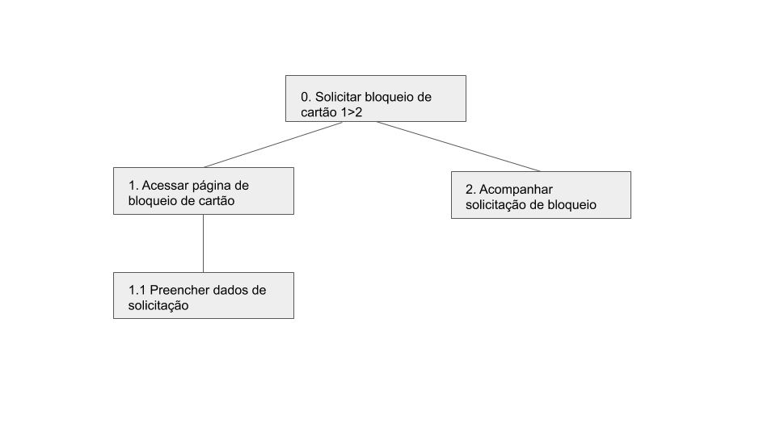
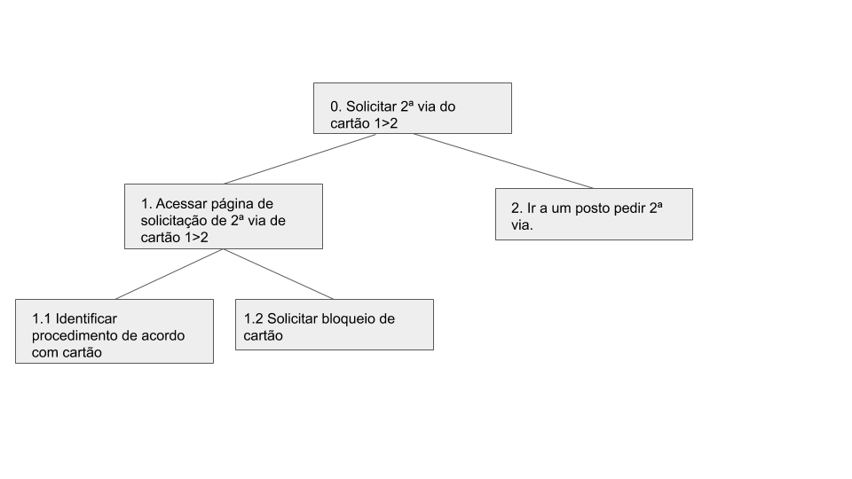
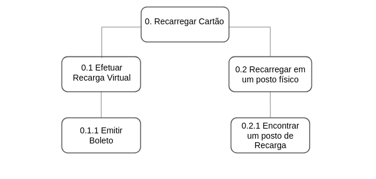
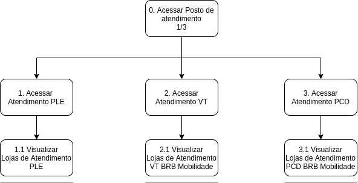

Análise de tarefa HTA
A análise de tarefas é utilizada para se entender sobre qual é o trabalho dos usuários, como eles o realizam e por quê. Nesse tipo de análise, o trabalho é definido em termos dos objetivos que os usuários querem ou precisam atingir. Dentre as análises de tarefas a escolhida para o projeto da displicina foi a HTA - Hierarchical Task Analysis ou Análise Hierárquica de tarefas, foi desenvolvida na década de 1960 para entender as competências e habilidades exibidas em tarefas complexas e não repetitivas. Ela ajuda a relacionar o que as pessoas fazem(ou se recomenda que façam), porque o fazem, e quais as consequências caso não o façam corretamente. Ela se baseia em psicologia funcional, e não comportamental, como eram as abordagens da época em que foi criada.
Análise sobre bloqueio de cartão

- Imagem 1. Diagrama HTA para o objetivo "Solicitar bloqueio de cartão"
| Objetivos/operações | Problemas e recomendações |
|---|---|
| 0. Solicitar bloqueio de cartão 1>2 | plano: Solicitar bloqueio de cartão perdido ou roubado problema: A seção para solicitar bloqueio está quase no rodapé da página o que dificulta um usuário novo a encontrar |
| 1. Acessar página de bloqueio de cartão | problema: O primeiro acesso da sessão a página de bloqueio de cartão te redireciona a página de gestor do sistema é necessário alterar no menu superior para solicitação de bloqueio recomendação: impedir que usuário comum consiga entrar por engano em páginas de gestores |
| 1.1 Preencher dados de solicitação | input: Formulário de bloqueio sendo necessário preencher tipo de bloqueio, nome do usuário do cartão, CPF, nome completo do solicitante do bloqueio, grau de parentesco com o usuário, telefone e uma observação, além de foto da identidade e CPF |
| 2. Acompanhar solicitação de bloqueio | plano: Acessar página de acompanhamento de chamado e verificar estado da solicitação de bloqueio. |
Análise sobre emissão de 2ª via

- Imagem 2. Diagrama HTA para o objetivo "Solicitar 2ª via de cartão"
| Objetivos/operações | Problemas e recomendações |
|---|---|
| 0. Solicitar 2ª via do cartão 1>2 | plano: Solicitar 2ª via de cartão perdido ou roubado problema: A seção para solicitar 2ª via está quase no rodapé da página o que dificulta um usuário novo a encontrar |
| 1. Acessar página de 2ª via de cartão 1>2 | plano: Ver o procedimento para solicitar 2ª via |
| 1.1 Identificar procedimento de acordo com o tipo de cartão | plano: Dependendo do cartão o procedimento é diferente |
| 1.2 Solicitar bloqueio de cartão | plano: Seguir o fluxo de atividade já analisada anteriormente |
| 2. Ir a um posto pedir 2ª via | problema: Não há redirecionamento direto a um mapa com os postos e endereços e sim a página inicial do site e mesmo após acessar os postos o mapa não mostra a localização do usuário o que dificulta localização do posto mais próximo. recomendação: Redirecionar para a área de postos de atendimento e emissão de 2ª via diretamente e pedir permissão para acesso ao gps do usuário. |
Análise sobre recarga de cartão

- Imagem 3. Diagrama HTA para o objetivo "Recarregar Cartão"
| Objetivos/operações | Problemas e recomendações |
|---|---|
| 0. Recarregar cartão 1>2 | plano: Efetuar recarga de crédito do cartão cidadão problema: A recarga virtual só pode ser feita via boleto |
| 0.1 Efetuar Recarga Virtual 1>2 | |
| 0.1.1 Emitir Boleto | |
| 0.2 Recarregar em um posto físico | plano: Ir até um posto efetuar a recarga |
| 0.2.1 Encontrar um posto de recarga | plano: Encontrar a localização do posto de recarga mais próximo para facilitar o procedimento |
Análise sobre linhas e horários de ônibus

- Imagem 4. Diagrama HTA para o objetivo "Encontrar linhas e horários de ônibus"
| Objetivos/operações | Problemas e recomendações |
|---|---|
| 0. Escolher linha | plano: Seleciona a linha que se deseja saber a respeito |
| 0.1 Observar horários | plano: Acompnhar todo horário de funcionamento da linha durante todos os dias da semana |
| 0.2 Encontrar rota | |
| 0.2.1 Observar paradas | plano: Poder ver todas as paradas de uma rota |
| 0.3 Acompanhar localização ônibus | plano: Poder ver a onde o ônibus está no momento |
Análise sobre suporte e atendimento

- Imagem 5. Diagrama HTA para o objetivo "Procurar um Atendimento"
| Objetivos/operações | Problemas e recomendações |
|---|---|
| 0. Acessar Posto de atendimento | plano: Encontrar um Atendimento |
| 1. Acessar Atendimento PLE | plano: Encontrar um Atendimento PLE |
| 1.1 Visualizar Lojas de Atendimento PLE | problema: Muda completamete a navegação. recomendação: Adicionar onde encontrar as lojas de atendimento PLE sem mudar a navegação |
| 2. Acessar Atendimento VT | plano: Encontrar um Atendimento VT |
| 2.1 Visualizar Lojas de Atendimento VT BRB Mobilidade | problema: Muda completamete a navegação. recomendação: Adicionar onde encontrar as lojas de atendimento VT sem mudar a navegação |
| 3. Acessar Atendimento PCD | plano: Encontrar um Atendimento PCD |
| 3.1 Visualizar Lojas de Atendimento PCD BRB Mobilidade | problema: Muda completamete a navegação. recomendação: Adicionar onde encontrar as lojas de atendimento PCD sem mudar a navegação |
Versionamento
| Versão | Data | Alteração | Integrante |
|---|---|---|---|
| 1.0 | 04/10 | Análise de tarefas bloqueio e 2º via | Gabriel Hussein |
| 1.1 | 04/10 | Análise de tarefas Recarga de cartão | Arthur Paiva |
| 1.2 | 04/10 | Análise de tarefas Encontrar linhas e horários de ônibus | Danilo Domingo |
| 1.3 | 04/10 | Análise sobre suporte e atendimento | Iago Theophilo |